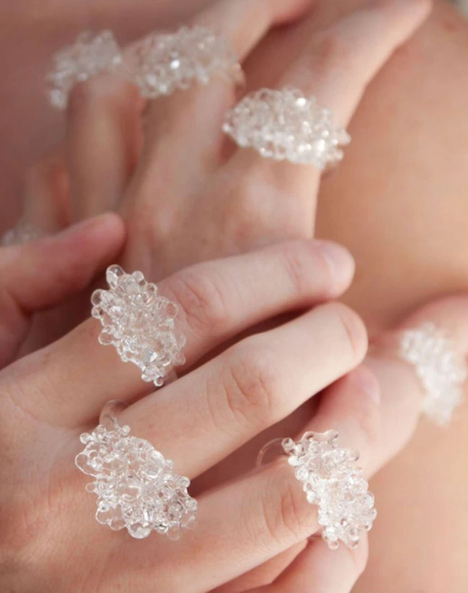

Design Challenge
What is the design challenge?
The IDEO Design Challenge was the initial phase in this project, which was an exercise that creates an action-based question. The easiest method to understand the problem is to put yourself in the shoes of the user. This entails a consideration of both the company's and the user's objectives.